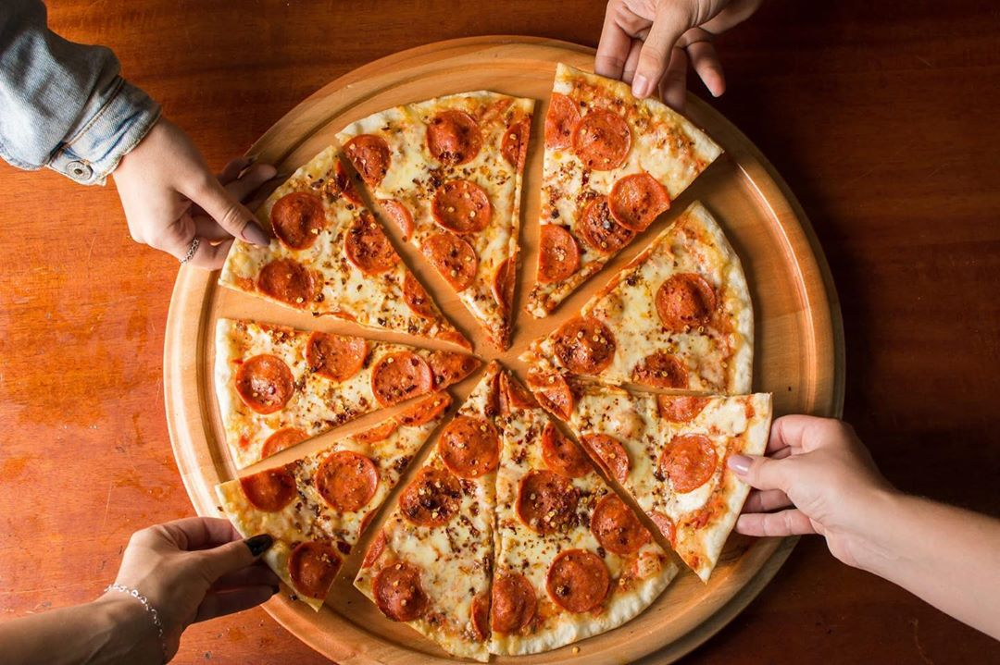
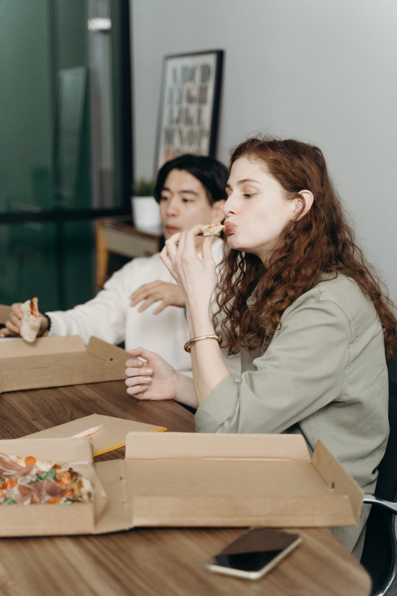

Conheça a Montês!


Chefes Preparados!
O Grange Chef de cozinha Mario, formado e treinado em terras italianas, trouxe sua técnica para o Brasil buscando mostrar o verdadeiro gosto da culinária Italiana!
Ambiente Modernizado!
Ambiente climatizado e estrategicamente arquitetado para que os cheiros da cozinha não entrem na área social
Atendimento de Excelência
Nossos Waiter são treinados especialmente para atender você com a maior atenção possível. Atentimento humanizado e preocupado com a experiência do cliente!
"Nunca comi uma pizza tão fina como essa!"
"Aproveitei o feriado e trouxe a família toda pra provar a pizza do Mario!"
"Esse chefe ta de parabéns, não sei como não apareceu como jurado no Master Chefão ainda!"